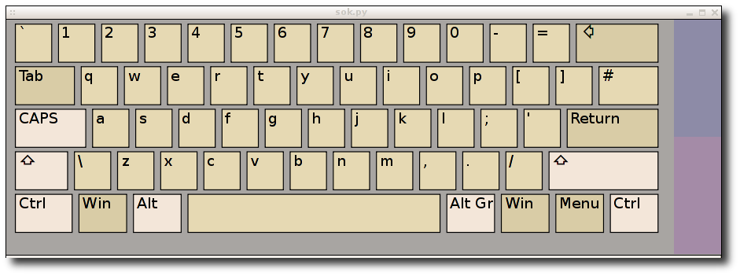
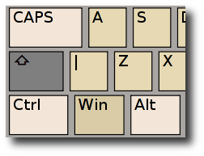
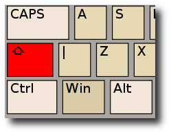
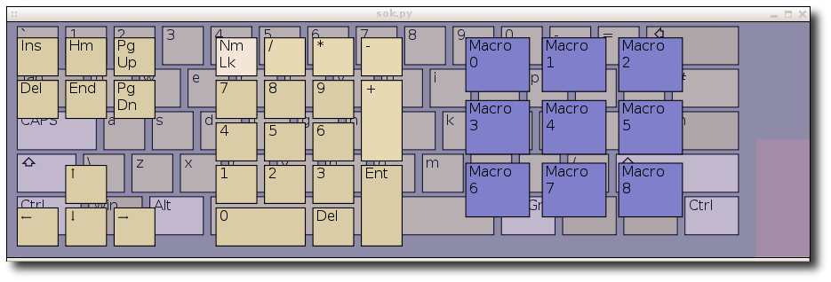
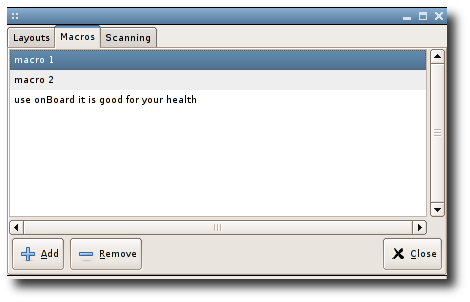
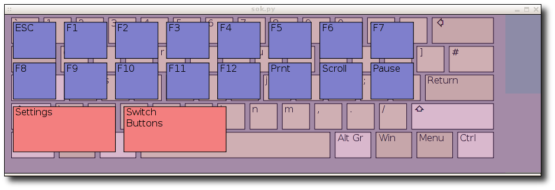
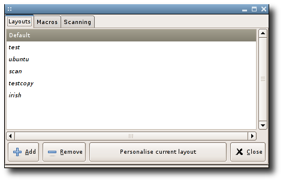
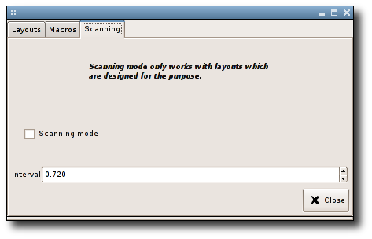

When using a pointer device entry is accomplished by clicking
the key corresponding to the letter or number you want to produce.
Modifier keys like shift are sticky. A single click latches it.

This sets the modifier on for the duration of one click on an ordinary key.
A further click locks the modifier.

This keeps the modifier active until a further click on that modifier.
Further keys can be accessed by clicking the coloured tabs down the right hand side.
The top tab brings up extra non alpha-numerical keys and the macro keys.

A macro key causes a group of characters or a phrase to be written by the keyboard.
Clicking an unassigned macro key causes a dialog asking whether you want to create
one in the settings dialog.
Click on the macros tab.

Click the add button to create a new macro. It is added at the end of the list.
Drag and drop the macros in the list to re-order.
Function and action keys are available by clicking the lower coloured tab.

Click settings button on the second pane to bring up settings dialog.

Select other layouts in the list to use them. Further layouts can be added by clicking
add and browsing to the .sok file of the wanted layout. Clicking the personalise button
makes of copy of the layout and opens the file browser to your layout folder. You can edit the svg files with
inkscape or similar. Further details can be found in the chapter concerning the creation
of layouts.
Onboard's scanning function is only available on layouts which support it.
Select the scan layout from the settings dialog as shown in the previous chapter.
Click on the scanning tab.

Click the scanning checkbox to activate.
A click anywhere on the keyboard will now initiate a scan across the top row.
A further click causes to scan down the selected column. A final click presses
the highlighted key.